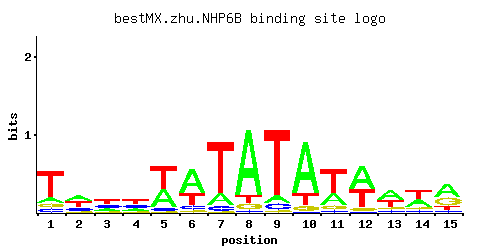

← All factors / TF RECORD
NHP6B
YBR089C-A, YBR090C-A
High-mobility group (HMG) protein that binds to and remodels nucleosomes; involved in recruiting FACT and other chromatin remodelling complexes to the chromosomes; functionally redundant with Nhp6Ap; homologous to mammalian HMGB1 and HMGB2
01 / RECOMMENDED MATRIX
Best-performing DNA-binding model.

Fisher’s P-valueNo data
Information content4.897
Max PWM score8.92
Recommended cutoff6.73
View and copy the recommended matrices ↘
Position frequency matrix (PFM)
A | 0.14 0.38 0.20 0.15 0.39 0.58 0.17 0.81 0.09 0.75 0.28 0.51 0.46 0.37 0.47 C | 0.11 0.21 0.32 0.32 0.07 0.09 0.07 0.03 0.07 0.02 0.05 0.03 0.10 0.11 0.08 G | 0.11 0.08 0.11 0.14 0.03 0.05 0.02 0.07 0.03 0.07 0.09 0.07 0.12 0.11 0.34 T | 0.65 0.34 0.38 0.38 0.51 0.28 0.75 0.09 0.81 0.17 0.58 0.39 0.32 0.41 0.11
Position count matrix (PCM)
A | 14 38 20 15 39 57 17 81 9 75 28 51 46 37 47 C | 11 21 32 32 7 9 7 3 7 2 5 3 10 11 8 G | 11 8 11 14 3 5 2 7 3 7 9 7 12 11 34 T | 65 34 38 38 51 28 75 9 81 17 57 39 32 41 11
Position weight matrix (PWM)
A | -0.83 0.17 -0.47 -0.76 0.20 0.59 -0.63 0.93 -1.27 0.85 -0.13 0.47 0.36 0.15 0.38 C | -0.49 0.15 0.58 0.58 -0.94 -0.69 -0.94 -1.79 -0.94 -2.20 -1.28 -1.79 -0.59 -0.49 -0.81 G | -0.49 -0.81 -0.49 -0.25 -1.79 -1.28 -2.20 -0.94 -1.79 -0.94 -0.69 -0.94 -0.41 -0.49 0.64 T | 0.71 0.06 0.17 0.17 0.47 -0.13 0.85 -1.27 0.93 -0.63 0.59 0.20 0.00 0.25 -1.07
02 / COMPARATIVE BENCHMARKS
Alternative candidate matrices 1
Historical matrix candidates from the original ScerTF database. Expand a source to inspect its original logo, scores, and matrix values.
NHP6BZhao and StormoP = No dataView matrix ↘
03 / EXPERIMENTAL CONTEXT
Gene-level annotations and interactions.
Genes bound in ChIP-chip experiments 1 genes
No Data
Genes affected by TF deletion 1 genes
No Data
Genes supported by both experiments 1 genes
No Data
Predicted TF–TF partners 1 genes
STB5